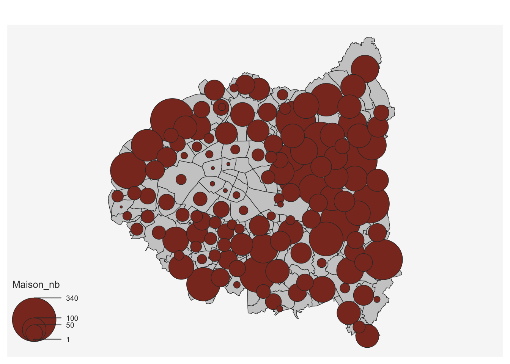
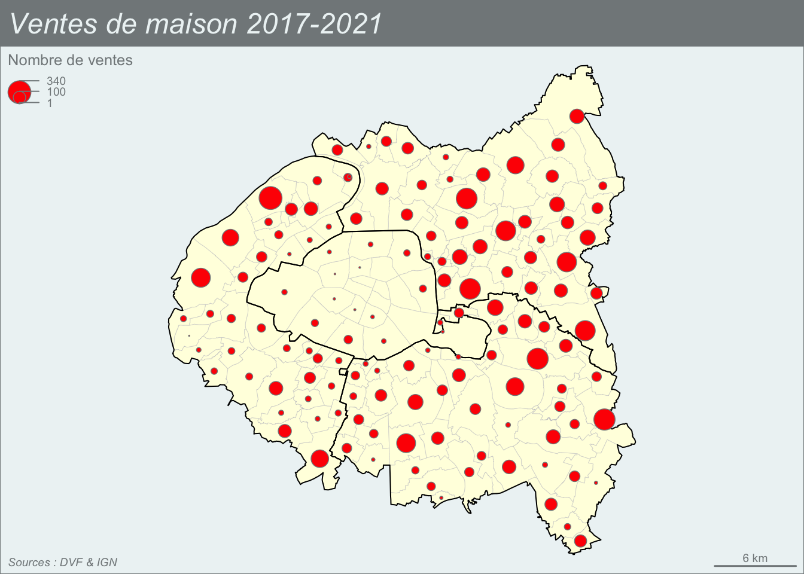
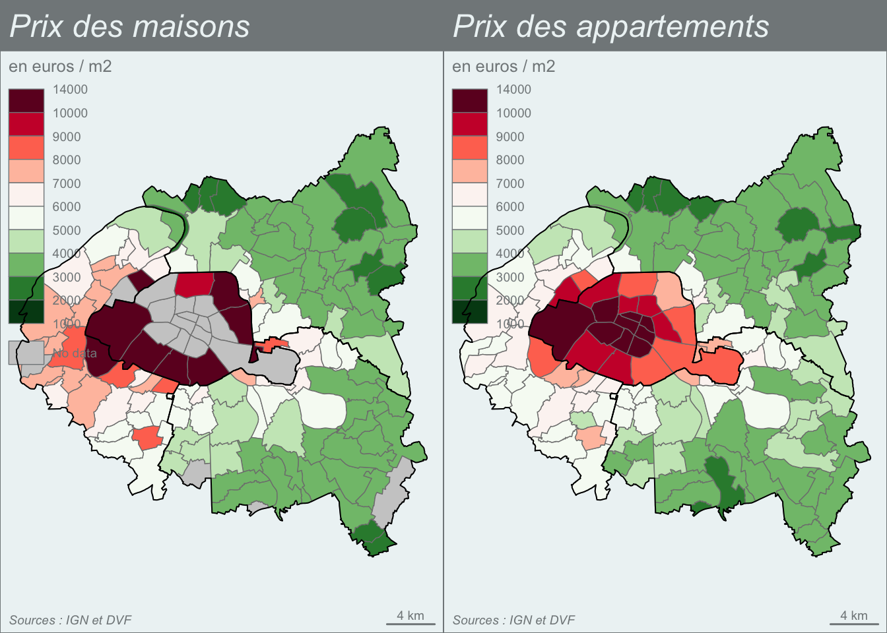

On se propose dans ce module d’apprendre à cartographier les données relatives aux ventes des maisons ou appartement par commune. On utilisera pour cela le package mapsf afin de produire des cartes thématiques combinant des variables de stock (e.g. nombre de ventes de maisons) et des variables de taux (e.g. prix de vente moyen des maisons au m2).
library(knitr)library(dplyr)
Attaching package: 'dplyr'
The following objects are masked from 'package:stats':
filter, lag
The following objects are masked from 'package:base':
intersect, setdiff, setequal, union
library(reshape2)library(sf)
Linking to GEOS 3.11.0, GDAL 3.5.3, PROJ 9.1.0; sf_use_s2() is TRUE
library(mapsf)
A. AGREGATION PAR COMMUNE
La première étape du travail consiste à agréger les données de vente par commune en utilisant le code INSEE qui permettra par la suite de faire la jointure avec un fonds de carte.
A.1 Nettoyage du fichier dvf
On charge le fichier dvf et on procède aux opérations de nettoyage nécéssaires (Cf. cours de Camille Signoretto).
# Chargementdvf <-read.csv2("projet/dvf/dvf_etudiants.csv")#### Selection et recodage # identifiant uniqueid<-dvf$ident# année => factorann <-as.factor(dvf$annee_vente)table(ann)# type => factortype <-as.factor(dvf$type_local)levels(type)<-c("Appart","Appart","Appart","Maison")table(type)# code de la commune code <-as.character(dvf$code_INSEE_commune)head(table(code))# nom de la communenom <- dvf$Nom.de.la.commune# surf => numericsurf <-as.numeric(dvf$Surface.réelle.du.bâti)# nbpp => integernbp <-as.integer(dvf$Nombre.de.pièces.principales)# prix => numericprix <-as.numeric(dvf$Valeur.foncière)#### Assemblagedon<-data.frame(id,ann, code, nom, type, surf, nbp, prix)### ajout de variablesdon$prixm2 <- don$prix/don$surf### elimination des données incomplètesdon<-don[complete.cases(don),]### elimination des valeurs aberrantes de prix/m2prixm2min <-quantile(don$prixm2,0.01)prixm2max <-quantile(don$prixm2,0.99)surfmin<-quantile(don$surf,0.01)surfmax<-quantile(don$surf,0.99)nbpmax <-quantile(don$nbp,0.99)don <- don %>%filter(prixm2>prixm2min, prixm2 <prixm2max, surf > surfmin, surf < surfmax, nbp <= nbpmax)## Selection de Paris et Petite Couronnedon$dep <-substr(don$code,1,2)don <- don %>%filter(don$dep %in%c("75","92","93","94"))### résumésummary(don)### SauvegardesaveRDS(don,"projet/dvf/dvfclean.RDS")
A.2 Calcul d’effectifs par commune
L’agrégation des variables qualitatives comme le type maison ou appartement s’effectue par simple comptage à l’aide de la fonction n(). On peut calculer les stocks d’un type précis :
don <-readRDS("projet/dvf/dvfclean.RDS")nb_maison <- don %>%filter(type =="Maison") %>%group_by(code) %>%summarise(Maison =n())head(nb_maison)
On peut également calculer d’un seul coup les stocks de différents types ce qui est plus efficace. Mais il faut alors pivoter le tableau pour redisposer les modalités en colonne.
# Agrégationnb_type <- don %>%group_by(code, type) %>%summarise(nb=n())
`summarise()` has grouped output by 'code'. You can override using the
`.groups` argument.
# Pivotage nb_type <-dcast(nb_type,formula = code~type,fill =0, value.var ="nb" )# Nom de la variablenames(nb_type) <-c("code","Appart_nb","Maison_nb")head(nb_type)
A la différence des effectifs, les volumes impliquent d’effectuer la somme de quantités. On va par exemple calculer le montant total des surfaces de logement ou le montant total des prix de ventes en séparant maisons et appartements.
# Agrégationsurf_tot <- don %>%group_by(code, type) %>%summarise(nb=sum(surf))
`summarise()` has grouped output by 'code'. You can override using the
`.groups` argument.
# Pivotage surf_tot <-dcast(surf_tot,formula = code~type,fill =0, value.var ="nb" )# Nom de la variablenames(surf_tot) <-c("code","Appart_surf_tot","Maison_surf_tot")head(surf_tot)
# Agrégationprix_tot <- don %>%group_by(code, type) %>%summarise(nb=sum(prix))
`summarise()` has grouped output by 'code'. You can override using the
`.groups` argument.
# Pivotage prix_tot <-dcast(prix_tot,formula = code~type,fill =0, value.var ="nb" )# Nom de la variablenames(prix_tot) <-c("code","Appart_prix_tot","Maison_prix_tot")head(prix_tot)
Si on effectue la jointure de ces fichier avec le fichier précédent, on pourra calculer la moyenne pondérée des surfaces des maisons ou des appartements ainsi que la moyenne pondérée des prix de vente au mètre carré.
Joining with `by = join_by(code)`
Joining with `by = join_by(code)`
A.4 Agrégation statistique
La moyenne pondérée n’est pas toujours l’option la plus intéressante puisqu’elle accord plus de poids aux ventes des biens les plus importants. On peut préférer une méthode ou chaque bien est considéré comme d’importance égale. On peut alors calculer des indicateurs tels que la médiane ou les quartiles des prix de vente au mètre carré. On pourra alors mieux cibler l’hétérogénéité des communes.
# Prix au m2 / médianeprixm2_med <- don %>%group_by(code, type) %>%summarise(nb=median(prixm2, na.rm=T))
`summarise()` has grouped output by 'code'. You can override using the
`.groups` argument.
prixm2_med <-dcast(prixm2_med,formula = code~type,fill =NA, value.var ="nb" )names(prixm2_med) <-c("code","Appart_prixm2_mediane","Maison_prixm2_mediane")# Prix au m2 / premier quartileprixm2_Q1 <- don %>%group_by(code, type) %>%summarise(nb=quantile(prixm2, 0.25, na.rm=T))
`summarise()` has grouped output by 'code'. You can override using the
`.groups` argument.
prixm2_Q1 <-dcast(prixm2_Q1,formula = code~type,fill =NA, value.var ="nb" )names(prixm2_Q1) <-c("code","Appart_prixm2_Q1","Maison_prixm2_Q1")# Prix au m2 / troisième quartileprixm2_Q3 <- don %>%group_by(code, type) %>%summarise(nb=quantile(prixm2, 0.75, na.rm=T))
`summarise()` has grouped output by 'code'. You can override using the
`.groups` argument.
On reprend le cours sur mapsf et on l’applique aux données dvf. On commence par charger le fonds de carte avec les données dvf et on ajoute un fonds de carte départemental à superposer par dessus :
# Trace les contours des communesmf_map(x= map_com, type ="base")# Ajoute le nombre de ventes de maisonmf_map(x =map_com, type ="prop",var ="Maison_nb",add=TRUE)
9 'NA' values are not plotted on the map.
4 '0' values are not plotted on the map.

Mais le résultat est peu satisfaisant car les cercles sont trop grands. Il faut en pratique toujours effectuer un réglage de ceux-ci avec l’instruction inches=
Carte de stock habillée
On obtient une carte évidemment plus satisfaisante en effectuant une série de réglages :
mf_theme("agolalight")mf_map(map_com, type ="base", col ="lightyellow",border="gray80", lwd=0.3)mf_map(map_dep, type ="base", col =NA,border="black",lwd=1,add =TRUE)mf_map(map_com, var ="Maison_nb",type ="prop",inches =0.1, col ="red",leg_pos ="topleft", leg_title ="Nombre de ventes",add=TRUE)
9 'NA' values are not plotted on the map.
4 '0' values are not plotted on the map.
mf_layout(title ="Ventes de maison 2017-2021", arrow = F,frame =TRUE,credits ="Sources : DVF & IGN")

Comparaison de cartes de stock
On peut mettre en regard les deux cartes de stock des ventes de maison et d’appartement. Dans ce cas on utilise le paramètre val_max = pour donner une taille proportionnelle aux stocks de chacune des deux cartes.
# Coupe la page en 2 colonnespar(mfrow=c(1,2))# Carte des maisonsmf_theme("agolalight")mf_map(map_com, type ="base", col ="lightyellow",border="gray80", lwd=0.3)mf_map(map_dep, type ="base", col =NA,border="black",lwd=1,add =TRUE)mf_map(map_com, var ="Maison_nb",type ="prop",inches =0.1, val_max =15000,col ="red",leg_pos ="topleft", leg_title ="Nombre de ventes 2017-2021",add=TRUE)
9 'NA' values are not plotted on the map.
4 '0' values are not plotted on the map.
mf_layout(title ="Maisons", frame =TRUE,arrow=F,credits ="Sources : DVF & IGN")# Carte des appartementsmf_theme("agolalight")mf_map(map_com, type ="base", col ="lightyellow",border="gray80", lwd=0.3)mf_map(map_dep, type ="base", col =NA,border="black",lwd=1,add =TRUE)mf_map(map_com, var ="Appart_nb",type ="prop",val_max =15000,inches =0.1, col ="blue",leg_pos ="topleft", leg_title ="Nombre de ventes 2017-2021",add=TRUE)
Commentaire : La carte finale permet de bien mettre en évidence le fait que les ventes d’appartements sont beaucoup plus nombreuses que celle des maisons. Mais elle montre aussi l’existence d’un gradient centre-périphérie avec l’accroissement progressif de la part des maisons par rapport aux appartements.
Carte choroplèthe minimale
On prend comme exemple la médiane du prix de vente au m2
# Carte choroplèthemf_map(x = map_com, var ="Appart_prixm2_mediane",type ="choro")
Carte choroplèthe habillée
On peut arriver à une carte beaucoup plus satisfaisante en contrôlant l’ensemble des paramètres de couleur et de découpage des classes. Puis en superposant les contours des départements au dessus de la carte des communes pour faciliter le repérage.
# Choisir les classes et la palettemybreaks =c(1000, 2000,3000,4000,5000,6000,7000,8000,9000,10000, 14000)mypal <-mf_get_pal(n =c(5, 5), pal =c("Greens", "Reds"))# Tracer la carte choroplèthemf_map( map_com,var ="Appart_prixm2_mediane",type ="choro",breaks = mybreaks,pal = mypal,border="white",col_na ="gray80",leg_title ="en euros / m2",leg_val_rnd =0)# Ajouter les contours des départementsmf_map(map_dep,type ="base",col =NA,border="black",lwd=1,add =TRUE)# Ajouter un cadre, un titre et des sourcesmf_layout(title ="Prix de vente médian des appartements 2017-2021", frame =TRUE,credits ="Sources : IGN et DVF")
Comparaison de cartes choroplèthes
On peut mettre en regard les deux cartes de prix moyen au m2 des appartements et des maisons en utilisant les mêmes limites de classe. On retirera toutefois les communes ou arrondissements dans lesquels moins de 20 maisons ont été vendues afin d’éviter des fluctuations aléatoires.
par(mfrow =c(1,2))# Choisir les classes et la palettemybreaks =c(1000, 2000,3000,4000,5000,6000,7000,8000,9000,10000, 14000)mypal <-mf_get_pal(n =c(5, 5), pal =c("Greens", "Reds"))# Carte des maisonsmap_com2 <- map_commap_com2$Maison_prixm2_mediane[map_com2$Maison_nb<20]<-NAmf_map( map_com2,var ="Maison_prixm2_mediane",type ="choro",breaks = mybreaks,pal = mypal,border="white",col_na ="gray80",leg_title ="en euros / m2",leg_val_rnd =0)mf_map(map_dep,type ="base",col =NA,border="black",lwd=1,add =TRUE)mf_layout(title ="Prix des maisons", frame =TRUE,arrow=F,credits ="Sources : IGN et DVF")# Carte des appartementsmf_map( map_com,var ="Appart_prixm2_mediane",type ="choro",breaks = mybreaks,pal = mypal,border="white",col_na ="gray80",leg_title ="en euros / m2",leg_val_rnd =0)mf_map(map_dep,type ="base",col =NA,border="black",lwd=1,add =TRUE)mf_layout(title ="Prix des appartements", arrow=F,frame =TRUE,credits ="Sources : IGN et DVF")

Commentaire : Les maisons sont en général plus chères que les appartements mais la géographie des deux distributions est très comparable.